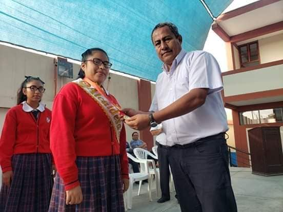

MISIÓN
Somos una institución educativa emblemática líder, competitiva e innovadora en la región, que brinda y fortalece su servicio educativo optimizando su calidad en beneficio de las niñas y adolescentes, que emplea el enfoque por competencias para la mejora de los aprendizajes, para la formación integral de las estudiantes, con el compromiso y participación del padre de familia y aliados estratégicos, potenciando las buenas relaciones humanas
